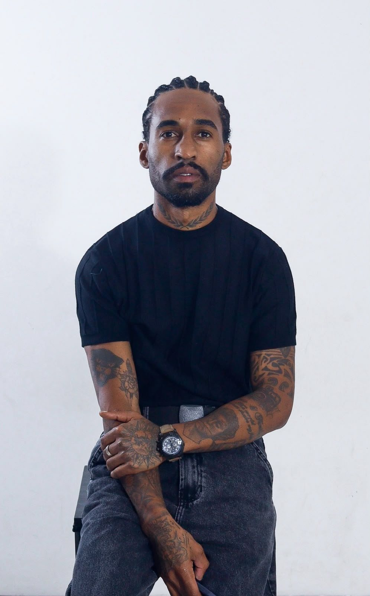
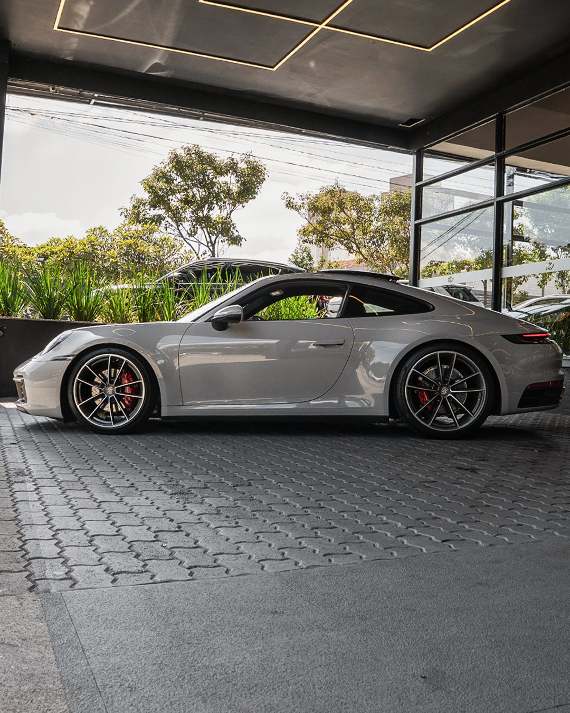

Direção audiovisual & estratégia
Liderança de equipes, direção de set e planejamento editorial. Da concepção do roteiro à entrega de conteúdos orientados a dados e conversão.
Olá, me chamo Diego dos Santos. Sou formado em Produção Audiovisual e estudante de Marketing Digital & Data Science (FIAP). Com mais de 10 anos de experiência, atuo entre o audiovisual e a estratégia digital. Domino todas as etapas da produção, da gestão de time à operação: Filmmaker/Videomaker, piloto de drone, editor, motion graphics e pós-produção. Com foco no digital e em cobertura de eventos, gosto de unir criatividade, dinamismo e dados para produzir conteúdos que engajam e já somam mais de 200 milhões de visualizações para grandes marcas e influenciadores.

Crio para influenciadores, artistas e grandes marcas. Meu foco é dar vida a produções pensadas estrategicamente para prender a atenção e viralizar de verdade nas redes sociais.
Gosto de misturar o audiovisual clássico com efeitos visuais e motion design. É assim que entrego materiais com a cara de cada cliente, seja para estourar a bolha da internet ou converter em vendas.
Como criador do Studio Pic Abstrato, sou movido por aprender sempre. Hoje, mergulho em marketing digital, ciência de dados, performance e nos avanços das Inteligências Artificiais. Faço isso para garantir que cada história tenha vida longa e gere impacto real nesse mar gigante que é a internet.
De uns anos pra cá, passei a liderar times de mídia e audiovisual, somando a minha bagagem técnica a uma visão afiada de negócios. Hoje, não me contento em entregar só um vídeo bonito: meu negócio é desenhar ecossistemas de conteúdo que trazem resultados práticos, baixam custos e alavancam as vendas.
Do briefing à entrega.
Liderança de equipes, direção de set e planejamento editorial. Da concepção do roteiro à entrega de conteúdos orientados a dados e conversão.
Operação avançada de câmeras DSLR, drone, gimbal e smartphones. Montagem de set, iluminação (gaffer) e captação de áudio para qualquer formato.
Edição dinâmica, color grading e finalização de alto impacto. Criação de animações e motion design utilizando Premiere Pro e After Effects.
Automação de processos criativos e integração de ferramentas de I.A. na produção e roteirização, ganhando escala sem perder qualidade.
Desenvolvimento de dashboards e apps internos para controle de fluxo de trabalho, prazos e análise de performance (KPIs) do time.
Setups ágeis para coberturas de grande porte, transmissões ao vivo (lives) e ativações de marcas com entrega em tempo real.
O showreel reúne os meus melhores trabalhos em um vídeo só.

Studio Pic AbstratoO que dizem sobre o meu trabalho.
Falo direto para a câmera no Instagram e no YouTube. Os temas são saúde, atividade física e o universo wellness, além de reflexões sobre a sociedade e informação útil para Guarulhos, sempre com pesquisa e número real. Nos Reels, roteiro curto e uma ideia por vídeo. No YouTube, temas mais fundos.
Também atuei como host e apresentador em vídeos institucionais da Kaufencar. Como produtor, sempre gravei os outros; estar do outro lado da lente mudou a forma como eu dirijo quem está nela.
Ver no Instagram Ver no YouTubeCuidei de todo o audiovisual da marca e apoiei o time de mídia, com 6 pessoas no total. Cobri o Carnaval de São Paulo com câmera e áudio. Criei 2 apps internos: um para controlar demandas e prazos da produção, outro para cruzar métricas de conteúdo com as de negócio.
Loja de veículos premium, só com carros acima de R$ 200 mil: Porsche, Lamborghini, Range Rover, Maserati, Dodge, BMW, Mercedes e Audi. Montei o marketing do zero e conduzi um time de 6 pessoas. Filmei os carros com câmera e drone e assumi o digital das 3 unidades.
Loja de roupas de griffe premium. Produzi conteúdo com influenciadores e artistas, com mais de 200 milhões de views. Um dos vídeos chegou a 21,5 milhões. Gravei com Rodrigo Faro, Charles do Bronx, Boca de 09, Lucas Tilty, Tamires e MC Ryan.
Minha produtora. Cuido de cada projeto do briefing à entrega, de agências ao setor público. Entre os clientes estão Magalu, Adidas, Claudia Leitte e Prefeitura de Guarulhos.
Universidade Cruzeiro do Sul, especialização em Produções Digitais
FIAP, em andamento
Português nativo
Inglês básico
Um conjunto de ferramentas flexível,
usado com olhar crítico.
Uso a ferramenta que o projeto pede: câmera, drone, gimbal e celular na captação; Premiere e After Effects na edição e no motion. O que decide o resultado é saber o que cada plano precisa mostrar. Fecho o ciclo sozinho, do set à entrega, e a ideia chega ao ar do jeito que planejei.
Me conte o que você precisa. Respondo pelo WhatsApp ou por e-mail.
diego.diegosant@gmail.com